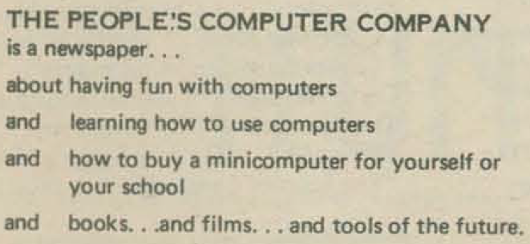
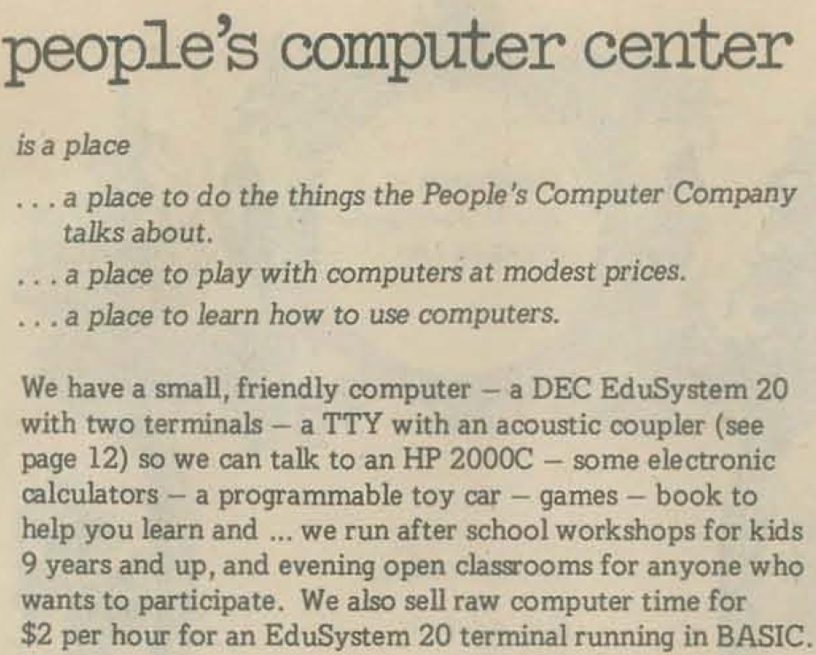
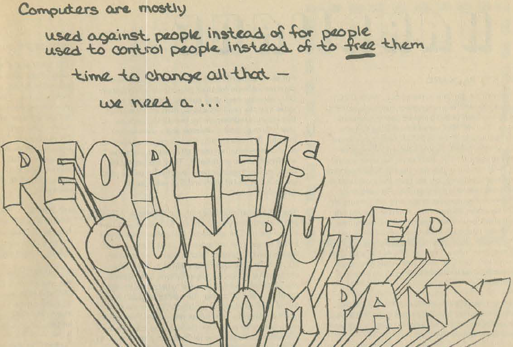

Albrecht and People's Computing
Bob Albrecht and Medicine Shows
Let's start here with a guy named Bob Albrecht. A lot of what I quote here is taken from an interview with Bob Albrecht from 2015. Unfortunately, the interview is conducted in such a way that it can make the history a bit hard to reason about, which I'll try to correct for here.
In the early 1960s, Albrecht was in the process of teaching FORTRAN. In Albrecht's words from the interview:
Around the early 1960s ... I was traveling all over the country to teachers' conferences giving papers and running workshops. When BASIC came along in 1964, by that time I was already running a course for high school students. So I started teaching high school students Fortran Programming in 1962.
Notice here how the interviewer doesn't really control the interview. ALbrecht is talking aobut BASIC in 1964 but then hopscotches back to 1962. You really have to pull out details from this interview and reconstruct a history.
Also from the interview:
In 1962 I began to teach high school students. ... I talked the University of Colorado Denver Center into going for a National Science Foundation grant. Control Data than provided a 160A, which would run Fortran paper tape, punch a paper tape on flexi readers and feed it in. So we ran that.
The context here is that Albrecht was working as an analyst for the Control Data Corporation in Colorado. Albrecht eventually moved to Minnesota where Control Data had its headquarters.
My students were the teachers; so, they taught students and teachers in the evening classes under this NSF grant. I wrote about these kids in Datamation magazine in about 1964 and the article I wrote was called a Modern Day Medicine Show.
The reference there is to Datamation magazine in July of 1963 and the article Albrecht wrote was called "A modern-day medicine show".
A key part of that article was the focus of a spring 1962 course with students from George Washington High School:
Emphasis was placed on the use of computers as a computational tool to assist students in solving mathematical problems.
This led to a summer course that same year with the following focus:
This course was conducted on a seminar basis, using the algebra of polynomials as the mathematical subject. The instructors posed problems. The students did the required mathematical analysis, developed problem solving procedures, programmed their solutions in FORTRAN and ran their problems on the 160A.
The CDC 160 series was a series of minicomputers built by Control Data Corporation. The CDC 160 and CDC 160-A were 12-bit minicomputers. According to Albrecht, the context of all this was:
We picked up the 160A moved it into George Washington High school and for an entire day my students ran demonstrations for different classes that were brought in. Similar to an old fashion medicine show of some guy standing up there trying to sell phony medicine, it struck with me, that this was like this with my students as the barkers.
According to the Datamation article, the program was extended to "eight other schools in Denver and Jefferson counties." You can see some of the media coverage at the time.
But, pretty soon, Albrecht turned to BASIC. Albrecht apparently taught programming at the University of Minnesota Laboratory High School, which, by 1965, featured a computing connection to the Dartmouth Time-Sharing Sytem (DTSS), where the young mathematics teachers praised BASIC. Albrecht apparently became a convert. In his words:
I said that's it! No more Fortran, so I started traveling all over the country crusading for BASIC. ... I lobbied, ranted, and raved for BASIC.
This focus clearly seems to be that BASIC was better suited to the kind of work that Albrecht was doing with students, in that it was more accessible to them as compared to FORTRAN.
A few references are given in the interview. Albrecht became involved with the National Council of Teachers of Mathematics (NCTM). When the NCTM appointed a Computer-Oriented Mathematics Committee, Albrecht was on it. The committee published the book Computer Facilities for Mathematics Instruction in 1967, which was an introduction to computing, and a book on BASIC. Apparently as part of this, or at least in the context of it, Albrecht established the Society to Help Abolish FORTRAN Teaching, known as SHAFT.
Another reference refers to a booklet called Introduction to an Algorithmic Language (BASIC) which Albrect had a hand in. This was published in 1968 by the NCTM.
Another reference is the book Computer Methods in Mathematics which was published in 1969. Further situating the history, Albrecht in the interview refers to the "Midpenisula Free University." This ran from 1966 to 1971 but had its most active years in 1968 and 1969. (I have no idea what the "2848" referred to in the interview means in this context.)
This history is also situated when Albrecht mentions Hewlett Packard's first programmable calculator, which he mistakenly remebers as the 9600. HP's first such calculator was the 9100A which came out in March of 1968, followed by the 9100B in the fall of 1969. The Wang calculator also being mentioned would have been the 7800 series which came out in mid 1969.
The Portola Institute
All of this history starts to take us into something called the Portola Institute. Albrecht lays the scene for us:
Every Thursday evening I would run computer programming, wine tasting, and Greek dancing parties. A guy named Dick Raymond came to one of these. Dick told us how he had an idle, non-profit corporation that isn't doing anything right now, and this looks like something that might be fun to do.
The non-profit mentioned was Portola. This was billed as a "nonprofit educational foundation" that Dick Raymond had started up in Menlo Park, California in 1966.
A guy named Stewart Brand came to Portola and set up his group which eventually, via Portola's resources, produced and published the Whole Earth Catalog, the first issue of which came out in 1968. That first issue notes that the catalog is one division of "The Portola Institute" and that other activities of the Institute include "computer education for all grade levels" and "simulation games for classroom use." That last point is clearly what I'm interested in and where this history will start to take us.
Working with LeRoy Finkel, Albrecht formed a group within Portola called DYMAX, the name of which came from, according to Albrecht, the "dymaxian world of Buckminster Fuller." Albrecht describes it:
My little group eventually split off. We went and found a cheap warehouse in Redwood City and set up there. We had a couple of PDP-8 computers on loan. The PDP-8 ran four terminals with BASIC using high-speed paper tape input, 10 characters a second and high-speed printer output — Teletype model 33. So various people came drifting in to use this equipment.
The context here clearly suggests that Albrecht, and his group, found a mutually beneficial partnership of some sort with DEC. DEC salespeople traveled with the PDPs in their trunks for demonstrations, and Albrecht put his in the back of his Volkswagen. Albrecht used the minicomputer to bring his traveling computing and BASIC show to students and educators around California.
It was around this time that Albrecht mentions he produced a book called "My Computer Likes Me". To situate the history, this book was published in June of 1972, whichw as printed and distributed by DEC. This book apparently coincided with a general focus of the group on starting to write and publish books that were self-teaching guides for various things.
That context, plus being inspired by the Whole Earth Catalog, focused Albrecht's desire to create a periodical. It's that periodical we'll turn to next.
Bob Albrecht and the PCC Newsletter
Bob Albrecht worked with LeRoy Finkel to create a new periodical within the context of their DYMAX group. They called the group that produced this periodical the People's Computer Company. This name was apparently in the same spirit as "Big Brother and the Holding Company" which was a popular band and most certainly not a company. The "holding" part was a bit of a pun regarding the possession of illegal drugs.
So now let's talk about the People's Computer Company and, by necessity, the accompanying People's Computer Company newsletter, founded in October 1972 by Albrecht. There is a distinction there and in Albrecht's words:
So that was the beginning of PCC, the newspaper, the periodical. Then Dennis [Allison] and I, LeRoy, and some others decided to start a non-profit corporation called People's Computer Company. Now we had PCC the periodical, and PCC the non-profit educational corporation.
Let's consider how the newsletter branded itself in the latter part of 1972.
 Throughout the newsletters you will see mention of the EduSystem as in the image above. The EduSystems were "educational computer system" made by DEC. They were built around the PDP-8 and PDP-11 minicomputers. You would see references in the literature to Edu 5, Edu 10, Edu 20 and so on.
Edu 25, for example, was a time-sharing system that allowed up to eight users, all using BASIC. The Edu 25 was actually an Edu 20 with 16 kilobyte words of memory and two "DECtapes." DECtapes were magnetic tapes on five inch reels, each of which could store up to 188,672 words. In fact, the December issue of the newsletter had an article called "Terminal Terminology" that provided some good context.
From that second image one very relevant point to understand is that the People's Computer Center eventually was a physical space and it was open enough that it consisted of young children all the way up through adults. Games might be targeted at one, neither, or both. But most of those were, in fact, in BASIC. Specifically going back to the interview, Albrecht says (of the late 1972, early 1973 time frame):
The California math counsel conference was held at a Asilomar [type of hotel] every year and Asilomar has all these wonderful little buildings. They put us in a little octogonal building and we just ran open workshops all day. If the conference doors were open we were open.
This seems to be have been the forerunner of what would come only a little later, which was a dedicated space for these kinds of activities. That space was called the Community Computer Center. According to ALbrecht:
We rented the space next door [to DYMAX]. ... PCC, the periodical, was produced by PCC, the non-profit corporation, and Community Computer Center set up its very own non-profit corporation that remained on Doyle St.
Also worth considering is this bit of descriptive blurb for the PCC:
Clearly some tonal differences there!
An important context is that, at the time, the only feasible way to use a computer was either to be associated with a large institution like a university or have the good fortune to attend a K-12 school that had access. Notice how EduSystem context was a "minicomputer." Personal computers weren't an option yet as the first one wasn't released until 1975.
Albrecht's focus on BASIC was front-and-center here as the first issue says:
If you want to talk to computers, you got to learn a language. There are lots of languages for talking to computers. Most of them are O.K. for computer freaks but lousy for people. We will use the computer language called BASIC -- great for people, not so good for computer freaks.
Of potential interest was an article in the December 1972 issue of the newsletter that talks about problems with BASIC. This article is called "Tilting at Windmills, Or What's Wrong with BASIC?" and an interesting part of that article is the following:
For you FORTRAN, APL and COBOL fanatics who are upset at our s-t-r-o-n-g stand for BASIC, we owe you an explanation. We deal primarily with school age kids and prefer BASIC for any and all of these reason ...
Then the article goes on to list a whole bunch of reasons. The article also states:
Keep in mind our target -- KIDS -- kids ages 8 to 18 in a problem-solving, simulation and gaming environment.
What this shows is a bit of what languages may have been vying for people's attention and what the focus of the PCC was. In fact, on that topic of simulation, the December newsletter mentions "Simulation/Gaming/News" (S/G/N) that was published five times a year. In describing that publication, the PCC text says something worth noting because it rings true even today.
Since 1952 the Simulation Councils have promoted simulation. Now, by no means because of these efforts alone but rather because nothing is so powerful as an idea whose time has come, simulation has permeated all aspects of our lives. As a result, many people are now running simulations, and they and many others are "buying" the results, without being aware of the limitations and liabilities involved. The fact that computers are usually used for simulation increases the hazard; to the uninitiated computers suggest an infallibility that does not in fact exist. Another problem is that many people expect "answers" from a simulation. True, a properly planned simulation experiment, using a model that has been completely validated for the purpose for which it is being used, can yield answers. But these conditions are not often met. Nor need they be for a simulation to be useful. The value of simulation lies much more often in the insight that the effort imparts than in the answers that the results suggest.
The emphasis there seems to be in the original.
It's worth noting that many of these initial newsletters say "Copyright {year} by Dymax" and that clearly was something that people wondered about. The December issue of the newsletter attempts to clear that up:
What's a Dymax? Yes, the name did come from Bucky Fuller's Dymaxion. Why? Who knows? We've been in business for 5 years. We number between 4 and 10 people depending on who you count, on which day, plus a group of available relatives. We vary in scope from a straight high school teacher, to a mad scientist-type to a chief fantasist to a few assorted computer freaks. We do all sorts of things. Primarily, we write good instructional materials (workbooks or the like) for computer and calculator manufacturers, publishers or for our own publication. We also teach lots of people how to use computers through our University Extension courses or in-service activities. We also do hardware consulting and participate at related conferences.
In the May issue, there was some good context about how the PCC was being written about.
It was the PCC newsletter that was the major form of outreach for the group and it's the one that lets us dig into some of the history. One thing we can certainly say is that the People's Computer Company highlighted the crucial role of DEC, HP, and their minicomputer time-sharing systems in spreading that computing and BASIC during the latter 1960s and early 1970s.
PCC in the Wider Context
Bob Albrecht did his best to keep abreast of all the computer education projects across the United States and reported on them whenever he could. A great case in point is in the very first issue which mentions the Huntington Project.
The Huntington Project has developed and distributed the most comprehensive set of computer simulation programs written in BASIC that we have seen. NSF (National Science Foundation) funded this project from 1968 to 1970 at the Polytechnic Institute of Brooklyn. ... [These programs] are so good that DEC and HP have reprinted the programs and make them available to their school users.
The Huntington Computer Project spanned eight years, two universities, hundreds of schools, and thousands of students. A good example is “The Use of Computer Simulations in High School Curricula” by Marian Visich Jr. and Ludwig Braun from January 1974 (ERIC source).
Ludwig Braun, a professor of electrical engineering at the Polytechnic Institute of Brooklyn (New York), received a grant from the NSF in 1967 to explore the use of computers in the high school curriculum. Braun, like Albrecht, caught the computing bug during the 1960s. He visited Kemeny and Kurtz in Hanover to learn about time-sharing, BASIC, and students teaching the computer, and he, too, became hooked on BASIC as the people's computing language. Over the course of that first three-year project, Braun demonstrated compelling educational value in computing simulations, and the NSF awarded him another two-year grant to develop those simulations.
By January 1974, the Huntington Project had produced seventeen simulations and support materials for use in primary and secondary school classrooms. The programs for the simulations—written in BASIC—were transmitted via paper tape (read by a teletypewriter), and they were accompanied by a teacher's manual, a student's manual, and a resource manual. The simulations reflected the concerns and issues of the day: water pollution, population growth, and domestic policy, for example. After testing and tweaking the simulations during 1970 to 1972, Braun and assistant director Marian Visich arranged for DEC to publish and distribute the Huntington Project materials in the spring of 1972.
Albrecht's People's Computer Company vigorously endorsed the Huntington Project, whose materials had also been distributed by DEC in its efforts to sell to educational users, and through which thousands of students and amateur computing enthusiasts entered the novel world of computing simulations. The Huntington Computer Project—with programs for students and educators written in BASIC and distributed by DEC—developed simulations about pollution and population modeling. Albrecht used those Huntington Project simulations in his computing roadshow, demonstrating them on—what else—a DEC minicomputer.
It's worth taking a brief look at one output from the Huntington Project just to show what the was in the air and you can find that in my coverage of High Noon.
An interesting note from the February 1973 issue of PCC is:
In 1967, twenty school districts in the Twin Cities area formed the Minnesota School Districts Data Processing Joint Board, and undertook to establish a unique service called Total Information for Educational Systems — TIES.
This comes from the article "Total Information for Educational Systems". TIES actually brings up the context of The Oregon Trail. That being said, it's interesting that The Oregon Trail is not mentioned here or, as far as I can see, in any of the issues. It feels like it would have been something that fit right into what PCC was promoting but maybe it also just wasn't widely known at the time.